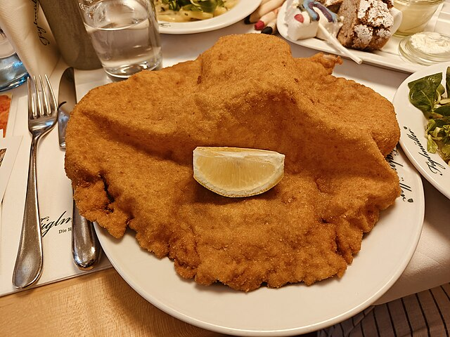

Home
Schnitzel

This Wiener Schnitzel is an easy Austrian recipe and one of our favorites. Boneless veal chops can also be substituted for pork or chicken and taste excellent!
Ingredients
- 1 ½ pounds veal cutlets
- ½ cup all-purpose flour
- 2 large eggs
- 3 tablespoons grated Parmesan cheese
- 2 tablespoons milk
- 1 teaspoon minced parsley
- ½ teaspoon salt
Directions
- Place veal cutlets between 2 sheets of heavy plastic on a solid, level surface. Firmly pound cutlets with the smooth side of a meat mallet to a 1/4-inch thickness. Dip cutlets in flour to coat; shake off excess.
- Beat eggs, Parmesan cheese, milk, parsley, salt, pepper, and nutmeg together in a shallow bowl until combined. Place bread crumbs on a plate.
- Dip each cutlet into the egg mixture, then press in bread crumbs to coat. Place coated cutlets on a plate and refrigerate for 1 hour to overnight.
- Melt butter in a large skillet over medium heat. Cook breaded cutlets in butter until browned, about 3 minutes per side. Transfer cutlets to a serving platter and pour pan juices over them. Garnish with lemon slices.
- Eat.